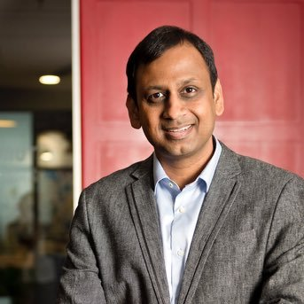
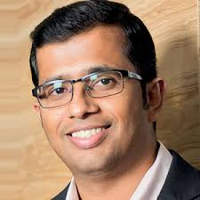

Home
About Us
redBus is India's largest online bus ticketing platform that has transformed bus travel in the country by bringing ease and convenience to millions of Indians who travel using buses. Founded in 2006, redBus is part of India’s leading online travel company MakeMyTrip Limited (NASDAQ: MMYT). By providing widest choice, superior customer service, lowest prices and unmatched benefits, redBus has served over 18 million customers. redBus has a global presence with operations across Indonesia, Singapore, Malaysia, Colombia and Peru apart from India.
Management Team
Prakash Sangam, CEO

Prakash Sangam has been Chief Executive Officer of redBus since June 2014. Prior to redBus. He served as an Executive Vice President of Info Edge India (Naukri group), heading two group businesses namely Shiksha.com and Jeevansathi.com. He’s also worked as General Manager of Marketing and Innovation at Airtel and has also had multiple roles across Marketing, Brand Management and Sales at Hindustan Unilever. Prakash has completed his MBA from IIM Calcutta and also holds an Honours degree in Production Engineering from Mumbai University.
Anoop Menon, CTO

Anoop Menon serves as Chief Technology Officer at redBus. Anoop plays an integral role in setting the company’s strategic direction, development and future growth. At redBus, he leads effective delivery of scalable systems to the customers, agents and bus operators by incorporating the latest technology. A tech enthusiast, Anoop comes with over 18 years of extensive experience in building scalable and high-performing products across telecom, internet and mobile ecommerce domains. Anoop strongly believes that hard work and commitment can overcome the barriers to success. He completed BE in Mechanical Engineering from Madras University and loves sports, movies, TV and music.